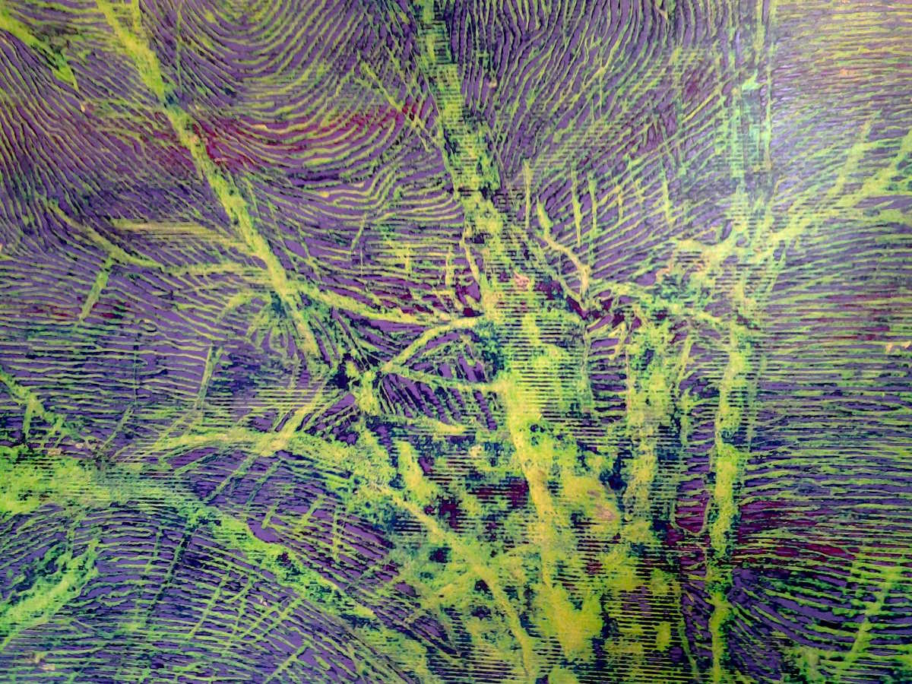

Pittura e pitture. Città e impronte in Claudio Cusatelli. Calanchi e necessità in Giorgio Morandi. La vocazione panoramica di Grizzana Morandi e i dettagli del paesaggio globale. Ilardi: l’orizzonte della metropoli. Simmel: la filosofia del paesaggio. Soffici: arte senza artificio. Derrida: marginalità e delimitazione. La possibilità di un futuro.
Paesaggi urbani e impronte umane si diramano come foglie. La pittura di Claudio Cusatelli sorprende con contrasti di colori e forme che appartengono alle nuove nature metropolitane, composte da innervature prodotte da corpi che eccedono lo spazio: non c’è la figura umana, soltanto la traccia, non c’è la città, esclusivamente la pura forma. Alcuni suoi quadri sono esposti alla mostra collettiva Il paesaggio necessario, ospitata nello spazio espositivo Fienili del Campiaro di Grizzana Morandi. La località dell’appennino bolognese prende la seconda parte del nome dal pittore Giorgio Morandi, che qui ha trascorso numerose estati coltivando il gusto di paesaggi aspri e selvatici, vincolati da rigide necessità e segnati da senso tattile oltre che visivo. In questi scenari naturali, dominano i calanchi, le cui tonalità intermedie tra grigio e ocra sono alla base, come ricorda il critico d’arte Eugenio Riccomi, del senso cromatico del pittore, quasi fuori dal tempo ma pienamente calato nel visibile.
Grizzana si trova nel punto mediano tra Bologna a Firenze, appartiene perlopiù ai riferimenti storici della prima città, ma tra montagne e valli presenta tracce di Pistoia e Prato, serba memorie bizantine e longobarde, e prima ancora etrusche. La zona, centrale eppure remota, si colloca in una sorta di faglia storicamente segnata da influenti separazioni territoriali e sotterranei incontri di culture, e possiede un’inevitabile vocazione panoramica.
In maniera molto pertinente, la mostra fornisce diversi dettagli di un paesaggio globale: tra questi, le visioni urbano-satellitari di Laura Baldassarri, le vedute lontane di Maurizio Bottarelli, le topografie immaginifiche di Giulia Dall’Olio, gli ecosistemi di segni di Dacia Manto, le stratificazioni antropologiche di Graziano Pompili. Visioni sospese di un presente ancorato a se stesso con incertezza ma senza scampo, immagini di un mondo segnato dalla contingenza, da quello che può essere e non essere.
Per comprendere il discorso, occorre approfondirne alcuni termini. Se la necessità rappresentava l’ordine trascendentale che teneva insieme gli spazi urbani e le forme di socialità del moderno, le dinamiche di individualizzazione contemporanee riguardano fini di tipo soggettivo e si basano su libertà di matrice corporea, disponendo, come nota Massimo Ilardi, un agire metropolitano irriducibile a quello proprio della città e delle sue istituzioni.
Città e metropoli pertanto non sono termini intercambiabili, nonostante in alcuni casi l’uso lo consenta, ma indicano orientamenti diversi e irriducibili. Indipendentemente dalla solennizzazione delle pratiche del consumo a cui approda il sociologo urbano Ilardi, l’orizzonte delle metropoli pone le condizioni dell’esperienza del presente e pertanto va attraversato in tutte le direzioni possibili.
All’interno delle metropoli si colloca l’arte di Cusatelli, i cui graffiti a cera su tela mettono in gioco un’inedita tecnica di accumulo e scavo, esemplificando un movimento che al contempo sfugge e trasforma le città. Cusatelli, a detta del critico Dino Borri, enuclea e decostruisce il rapporto tra corpi e città, mostrando il costitutivo dissidio tra pietre e viventi. Tuttavia, questo dissidio è proprio quanto ha animato ambedue: le pietre sono la vita delle città, i segni viventi dello stratificarsi della sua vicenda.
Questo loro reciproco appartenersi e integrarsi, tipico della modernità, è attualmente spezzato da altri movimenti, più tipici della nostra contemporaneità. Gli spazi predefiniti delle politica che costringevano i corpi alle disposizioni definite dalle mura delle città trovano ormai la loro deriva nell’ipocrisia dei centri urbani artefatti, che negano la* polis* pur riaffermandone apparentemente la centralità; eppure, oggi nessun muro e nessuna pratica istituzionale sembrano riuscire ad aver ragione di una dimensione metropolitana globale costituita di silicio, carbonio e cariche elettriche, che inizia ovunque e arriva ogni dove, permettendo alla corporeità dimensioni inesplorate. Questo orizzonte rappresenta quella sfida di una diversa dimensione politica e di nuovi rapporti tra sapere e potere che qualcuno dovrà pure saper raccogliere.
 Claudio Cusatelli, “Hirisci Satura from Tokyo”, pag. 45 (particolare), 2005, collezione dell’autore, Bari © Claudio Cusatelli
Eleonora Frattarolo, curatrice della mostra, afferma che Cusatelli ambisce alla totalità anche dove apparentemente si occupa del frammento. L’osservazione coglie nel peculiare universo di segni del pittore le modalità generali di costituzione di un paesaggio, e rende però opportuna una precisazione, laddove è proprio nell’attenzione ai frammenti che si costituisce il paesaggio come totalità.
Infatti, il paesaggio si forma nel raccogliere gli elementi di una natura già frammentata, attraverso uno specifico sentimento, più propriamente una tonalità affettiva (Stimmung), che, come dice George Simmel, «tinge la totalità dei singoli contenuti». Il fondamentale scritto sulla filosofia del paesaggio asserisce che se la natura è totalità in quanto «unità fluttuante dell’accadere», al paesaggio è invece «essenziale la delimitazione»: la sua creazione richiede pertanto proprio «una lacerazione rispetto al sentimento unitario della natura universale».
Il filosofo tedesco ricorda che nel vedere un paesaggio una parte diventa un tutto e acquisisce un senso autonomo: in questo atto, che per l’artista è un processo compiuto con purezza e forza, viene ricreata la materia offerta dalla natura. Il paesaggio natale di Cusatelli è quello di Bari, metropoli antica dove da sempre il meridione italiano guarda verso l’est balcanico e le rotte levantine; nelle sfumature arancio e verde della sua pittura vediamo i segni delle lacerazioni e delle ricomposizioni in cui prendono forma le metropoli di Calcutta, Tokyo e New York.
In qualche modo, dentro le venature delle sue tele ritroviamo anche Grizzana. All’esatto confine tra Italia peninsulare e continentale, remota dall’urbanizzazione pur se ben fornita di infrastrutture nelle immediate vicinanze, centro rurale ormai lontano dall’economia rurale e foresta popolata di nuovi forestieri, pur se ricalcitrante è destinata alla definitiva integrazione nell’area metropolitana bolognese: Grizzana è quindi, anche se in maniera quasi impercettibile, nella metropoli globale.
Tuttavia, perché possa davvero approfittare di tale opportunità, occorre che se ne renda conto con sufficiente spirito critico. Altrimenti, ogni apparente beneficio può capovolgersi in disastro: la variante di valico, non ancora conclusa dopo anni di lavori continuamente interrotti, è già all’origine di diversi dissesti, oltre ad avere ridefinito porzioni di paesaggio in modi che a Morandi non sarebbero piaciuti. Tuttavia, ormai è una realtà inalienabile, aprendo a prospettive che attendono nuovi pittori.
La forma metropoli si compie in un generalizzato movimento d’assimilazione capace di abbattere tanto lo spirito provinciale quanto quello cittadino. Lo «strapaese» sui cui si arroccò Morandi non ha più senso, ma possiamo ancora riflettere sull’idea di depurare l’arte da ogni artificio, come aveva sottolineato il poeta Ardengo Soffici rispetto al modo con cui il pittore gestiva il rapporto degli oggetti con lo spazio.
Approfondendo i motivi della sua pittura in una lettera spedita al jazzista Thelonious Monk all’indomani di un concerto al Teatro Lirico di Milano del 21 aprile 1961, e ammirandone la capacità di permettere al suono di essere «unico protagonista della scena», Morandi considera che il rapporto spaziale e cromatico tra gli elementi della composizione trova luogo in una «tecnica» che è però soltanto un «incidente» _in quanto corrisponde ad «un accadimento di una visione interiore»: il problema non è in un modo di rappresentare le cose, ma in quello di sentirle con un «valore universale»_.
L’autentico «discorso artistico» _anticipa lo stesso pensiero dell’autore e mette in crisi il rapporto tra sguardo e realtà «creando ogni volta un gesto “su misura”». Cercando in consonanza con quanto aveva colto di Monk nell’arte «una stessa essenza che si rinnova nella forma», Morandi concludeva queste sue decisive riflessioni considerando che «_in margine alla nuda realtà, all’evidenza delle cose oggettive […] ogni opera d’arte non è che la possibilità di avere altri occhi, di moltiplicare una realtà non più di fronte a noi, ma scavata nel nostro vissuto, nel nostro piccolo mondo di esseri umani.»
Giorgio Morandi,  (1914), olio su tela, collezione Gianni Mattioli, deposito a lungo termine presso la Collezione Peggy Guggenheim, Venezia © Giorgio Morandi SIAE 2008
(1914), olio su tela, collezione Gianni Mattioli, deposito a lungo termine presso la Collezione Peggy Guggenheim, Venezia © Giorgio Morandi SIAE 2008
Nei nostri spazi, più vasti dello sguardo e più grandi di città e paesi, tutto è centro e tutto è periferia, perdono valore le localizzazioni assolute imponendosi quelle relative. Forse, non c’è quella «stessa essenza che si rinnova nella forma», che voleva Morandi: piuttosto, sono le forme a rinnovare essenze e la realtà non è mai veramente nuda. In tempi più prossimi ai nostri. è Derrida a pensare i «margini» in rapporto decisivo con l’essenziale: quanto si pone ai limiti è il discrimine che delimita e imponendosi come «l’altro sempre da pensare». Questo «altro» è anche la possibilità di un futuro capace di implicare in sé il cuore selvaggio del bosco e la prossimità ad aree culturalmente rilevanti. Un po’ come un’impronta che è foglia e città.
•
RIFERIMENTI
Giorgio Morandi, Lettera di uno spettatore, Bologna 22.04.1961.
Joan M. Lukach, Giorgio Morandi and Modernism in Italy beetween the Wars, in AAVV, Italian Art in the 20th Century. Painting and Sculpture 1900-1988, London, Royal Academy of Arts 14.1/9.4/89. Edited by Emili Braun. Prestel-Varlang, Munich and Royal Academy of Arts, London, 1989.
AAVV - Il paesaggio necessario – Omaggio a Giorgio Morandi. Grizzana Morandi, Fienili del Campiaro 26.07/ 30.10.2012. A cura di Eleonora Frattarolo, con opere e contributi di Graziella Leoni, Lidia Bagnoli, Laura Baldassarrri, Bruno Benuzzi, Maurizio Bottarelli, Claudio Cusatelli, Giulia Dall’Olio, Daniele Degli Angeli, Massimiliano Fabbri, Dacia Manto, Mauro Mazzali, Graziano Pompili, Massimo Pulini. Grafiche dell’Ariete, Bologna 2012.
George Simmel, Filosofia del paesaggio (1908), in Il volto e il ritratto. Saggi sull’arte, Il Mulino, Bologna 1985.
Jacques Derrida, La diffèrance (1968), in Margini della filosofia (1972), Einaudi, Torino 1997.
Massimo Ilardi, Negli spazi vuoti della metropoli, Bollati Boringhieri, Torino 1999.
•
Fotografia: Claudio Comandini, “Paesaggio interstiziale” - Grizzana Morandi, marzo 2010.

{kind=link}